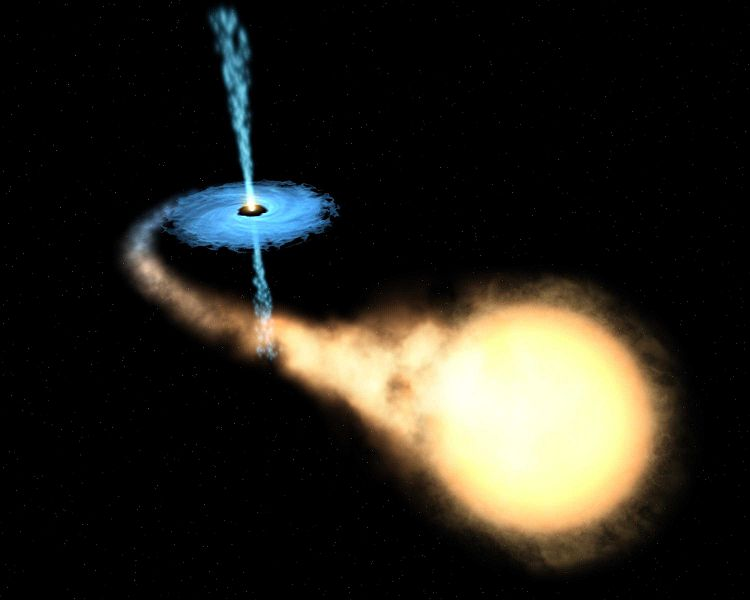

DIBS

Relativistic Jet
Relativistic jets are long, thin structures of matter connected to the central accreting compact objects, for example in X-ray binaries. They represent powerful flows of energy and matter being shot away from black holes or neutron stars. The luminosity of these jets peaks in the radio, but that they also emit X-rays (Fender 2006). The physical process that creates jets is not yet well understood.

Artist’s representation of an X-ray binary, showing a jet emanating from the compact object in blue. Credit: NASA/ESA